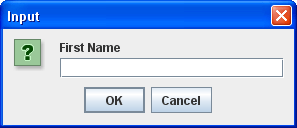
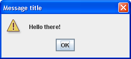
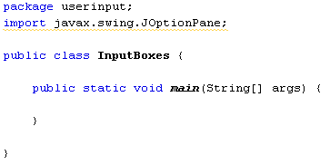
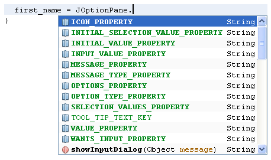
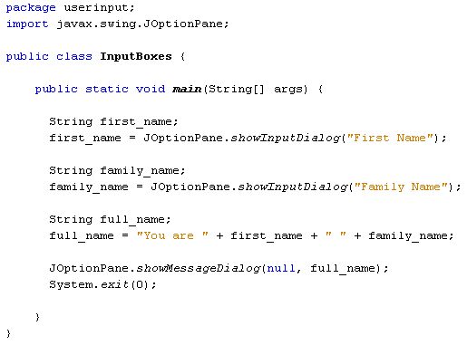
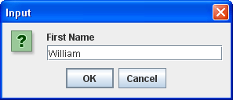
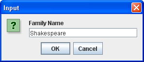

Another useful class for accepting user input, and displaying results, is the JOptionPane class. This is located in the javax.swing library. The JOptionPane class allows you to have input boxes like this one:

And message boxes like this:

Let's adapt our code from the previous section and have some option panes.
The first thing to do is to reference the library we want to use:
import javax.swing.JOptionPane;
This tells java that we want to use the JOptionPane class, located in the javax.swing library.
You can start a new project for this, if you prefer not to adapt your previous code. (You should know how to create a new project by now. Just remember to change the name of the Class from Main to something else. We're going to have the class name InputBoxes for ours. Our package name will be userinput.)
Add the import line to your new project, and your code window should look like something like this:

(The reason for the wavy underline is that we haven't used the JOptionPane class yet. It will go away once we do.)
To get an input box that the user can type into, we can use the showInputDialog method of JOptionPane. We'll store the input straight into a first name variable again, just like last time. So add the following line to your main method:
String first_name;
first_name = JOptionPane.showInputDialog("First
Name");
As soon as you type a full stop after JOptionPane you will see the following popup list:

Double click showInputDialog. In between the round brackets of showInputDialog type the message that you want displayed above the input text box. We've typed "First name". Like all strings, it needs to go between double quotes.
Add the following code so that we can get the user's family name:
String family_name;
family_name = JOptionPane.showInputDialog("Family
Name");
Join the two together, and add some text:
String full_name;
full_name = "You are " + first_name + "
" + family_name;
To display the result in a message box, add the following:
JOptionPane.showMessageDialog( null, full_name );
This time, we want showMessageDialog from the popup list. In between the round brackets we first have the word null. This is a java keyword and just means that the message box is not associated with anything else in the programme. After a comma comes the text we want to display in the message box. The whole of your code should look like this:

Notice the line at the bottom of the code:
System.exit(0);
As its name suggests, this ensures that the programme exits. But it also tidies up for us, removing all the created objects from memory.
Now run your code. (Another quick way to run your programme in NetBeans is by right-clicking anywhere inside of the coding window. From the menu that appears, select Run File.)
You'll see the First Name input box. Type something into it, then click OK:

When the Family Name input box appears, type a family name and click OK:

After you click OK, the message box will display:
Click OK to end the programme.
Exercise
Input boxes and Message boxes can be formatted further. Try the following for
your Input boxes:
showInputDialog("First Name", "Enter Your First Name");
showInputDialog("Family", "Enter Your Family Name");
Exercise
For your Message boxes try this (yours should be on one line):
showMessageDialog(null, full_name, "Name", JOptionPane.INFORMATION_MESSAGE);
Exercise
Instead of JOptionPane.INFORMATION_MESSAGE try these:
ERROR_MESSAGE
PLAIN_MESSAGE
QUESTION_MESSAGE
WARNING_MESSAGE
Help for the Exercise
You have to use the String variable to get your numbers from the user:
String breadth;
breadth = JOptionPane.showInputDialog("Rectangle
Breadth");
However, you can't multiply two strings together. You need to convert the Strings to integers. You can convert a string to an integer like this:
Integer.parseInt( string_to_convert )
So you type Integer then a full stop. After the stop, type parseInt( ). In between the round brackets of parseInt, type the name of the string variable you're trying to convert.
Set up an int variable for the area. You can then multiply and assign on the same line;
int area = Integer.parseInt( string_one ) * Integer.parseInt( string_two);
For the message box, use concatenation:
"answer = " + area
You can use any of the MESSAGE symbols for your message box.
OK, we'll move on now. Let's try some IF statements.